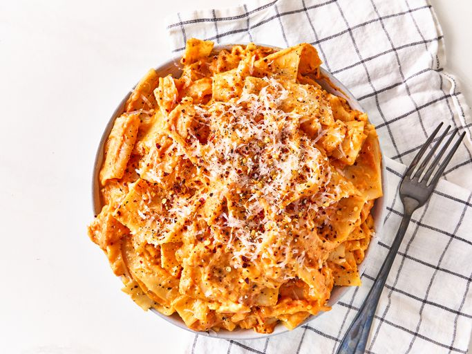

Lasagna
Description

Ingredients
- 8 ounces lasagna noodles, broken in half
- 1 (24-ounce) jar of pasta sauce
- 8 ounces shredded whole milk mozzarella cheese
Steps
-
Bring a large pot of lightly salted water to a boil. Cook lasanga noodles in the boiling water, stirring
occasionally, until tender yet firm to the bite, 10 to 12 minutes.
-
Strain noodles and return to the pot. Add pasta sauce and cook on medium heat until sauce is heated through,
about 5 minutes.
-
Add cheese and stir until cheese is melted. Serve immediately.
Recipe Tip
To serve, garnish with freshly grated black pepper on top, or a bit of grated cheese for a restaurant-quality
presentation.
Home